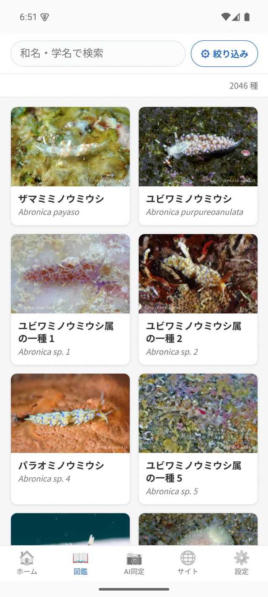
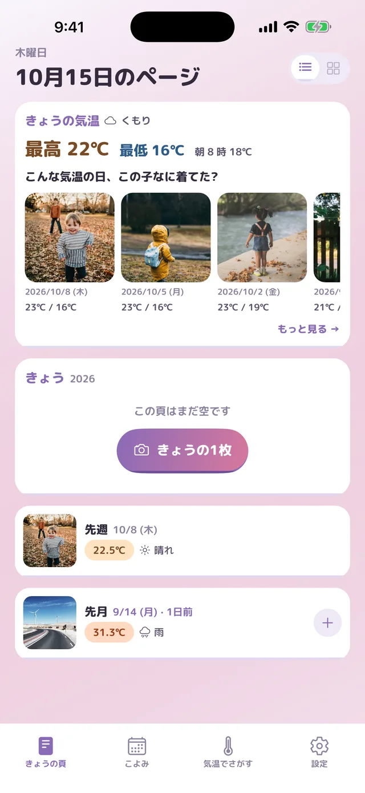

No. 01Field guide
SEASLUG.WORLD
A sea slug field guide made by divers. Photos from divers around the world, sorted by species. Contributors can keep their own field guide on the site.
Independent maker in Japan
Less time spent wondering.
Specimen No. 01Hypselodoris festivaimaginaryLength 30 mm
Stylized drawings of real species. Tap a name to open it in the SEASLUG.WORLD field guide.
No. 01 – 05

A sea slug field guide made by divers. Photos from divers around the world, sorted by species. Contributors can keep their own field guide on the site.

What did I wear the last time it was this warm? One photo a day, with the temperature and weather added for you. See it next to the same day last year and the year before.
Find the cheapest place to restock household items. Stick a QR code on your washing machine or shelf, scan it when you're about to run out, and it compares Rakuten, Amazon and Yahoo! Shopping, including shipping and points. kirerumae.com
A guardian for EC-CUBE online stores (EC-CUBE is an open-source store system popular in Japan). When a hosting company sends a security notice, paste its URL: Shisa checks whether it applies to this store, tests the fix in a sandbox, and protects the store without taking it offline. Built for Built with Claude: Japan 2026. Demo video (3 min, Japanese) · Try it on the demo store (Japanese) · GitHub (open source)
Moves members, products, categories and orders from older EC-CUBE (2.x / 3.x / 4.0 / 4.1) to 4.2 / 4.3. Owners Store · other plugins
Umiushi Lab is a small app studio in Japan run by Nobuhiko Kimoto. "Umiushi" means sea slug in Japanese. I write about why I make things, what I tried and the numbers on Substack.
Contact: info@umiushi-lab.com (English or Japanese)